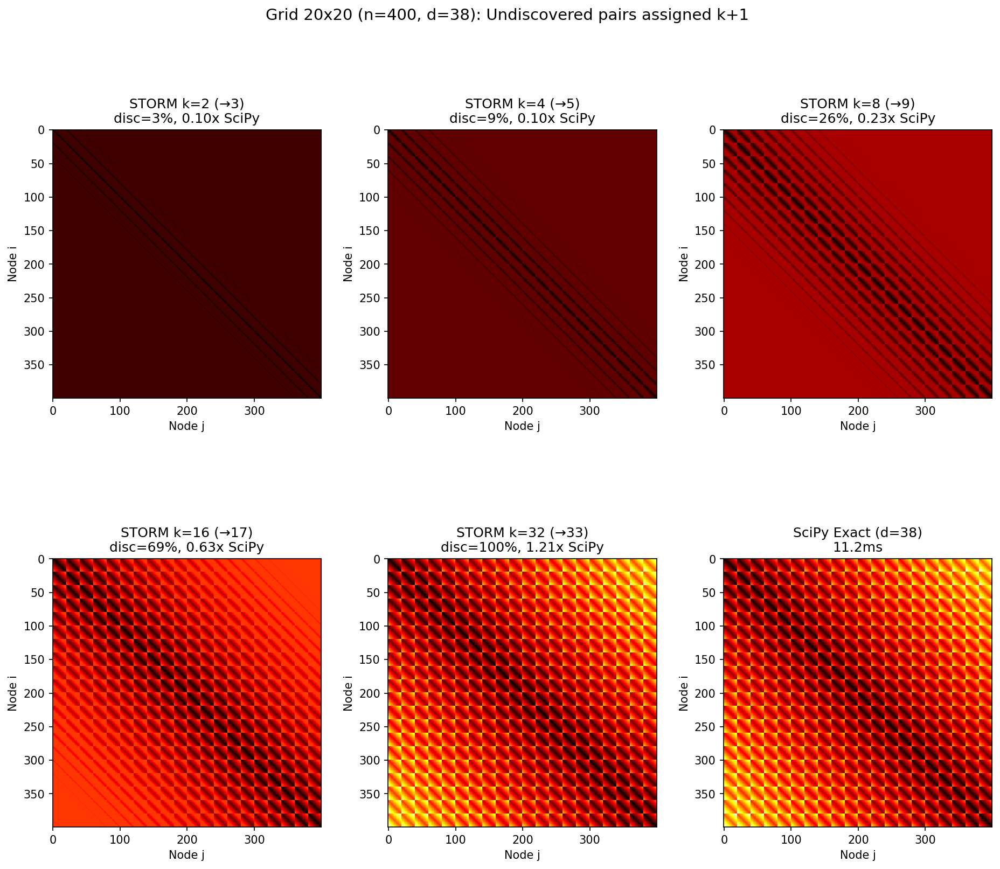

STORM (Sparse Topology-aware Optimal Reachability Matrix) is a Cython-accelerated framework for incremental all-pairs shortest path (APSP) computation. It extends the AORM framework (IEEE Access, 2021) with five structural changes and a fused C pruning kernel.
Real-world networks are overwhelmingly small-world: Facebook's 721 million users are connected by an average distance of just 4.74 hops. Most applications—traffic prediction, epidemic tracing, influence analysis—need only local distance information (k=3–5 hops), not full APSP. STORM's incremental design provides this information faster than any existing method.
STORM preserves AORM's iterative reachability framework while introducing five structural changes:
| ID | AORM | STORM | Effect |
|---|---|---|---|
| C1 | Dense matmul O(n³) | Sparse SpMM O(nnz·c̄) | Sparse graph acceleration |
| C2 | Fixed O(n²)/iter | nnz-proportional cost | Progressive sparsity |
| C3 | Pre-prune check O(n²) | Post-prune nnz=0, O(1) | Correct + fast |
| C4 | heaviside O(n²) | data[:]=1 O(nnz) | nnz-only work |
| C5 | Sparse F add O(n²) | Dense bool F, O(1)/entry | Footprint acceleration |
The Cython C-extension (_storm_core.pyx) then fuses pruning, convergence checking, and footprint update into a single C loop, eliminating three separate SciPy sparse operations per iteration. The effect scales with iteration count: 17% on BA (d=5) but 550% on Grid (d=88).
When edge (u,v) is added: Di,jnew = min(Di,jold, Di,u + 1 + Dv,j). Only 0.008% of pairs are affected per update, yielding 22–33× speedup over full recomputation.
| Method | Time (s) | vs STORM | vs NetworkX |
|---|---|---|---|
| STORM | 1.156 | 1.0× | 16.5× |
| SciPy (C Dijkstra) | 2.960 | 0.39× | 6.5× |
| I-AORM | 3.502 | 0.33× | 5.5× |
| M-AORM | 4.970 | 0.23× | 3.8× |
| NetworkX | 19.110 | 0.06× | 1.0× |
| k | STORM | I-AORM | NetworkX | vs I-AORM | vs NX |
|---|---|---|---|---|---|
| 2 | 0.080s | 0.545s | 0.764s | 6.8× | 9.6× |
| 5 | 0.959s | 1.858s | 17.520s | 1.9× | 18.3× |
| 8 | 1.178s | 3.206s | 19.162s | 2.7× | 16.3× |
At k=5, 89% of all shortest paths are already found — sufficient for traffic congestion prediction (k=3–5) and epidemic tracing (k=2–4).
| Topology | Diameter | STORM | SciPy | STORM/SciPy |
|---|---|---|---|---|
| BA (scale-free) | 5 | 0.283s | 0.480s | 1.7× |
| ER (random) | 6 | 0.320s | 0.488s | 1.5× |
| WS (small-world) | 13 | 0.291s | 0.422s | 1.5× |
| Grid (2D lattice) | 88 | 0.475s | 0.303s | 0.6× |
| PLC (powerlaw) | 5 | 0.284s | 0.481s | 1.7× |
STORM wins on all small-diameter topologies (d ≤ 13). On Grid (d=88), SciPy is 1.6× faster for full APSP, but hop-constrained STORM at k ≤ 16 is still faster than SciPy.

| n | ADD (ms) | Full (ms) | Speedup |
|---|---|---|---|
| 500 | 0.80 | 17.2 | 22× |
| 1,000 | 2.32 | 68.9 | 30× |
| 2,000 | 8.52 | 283.7 | 33× |
Three synergistic mechanisms: (1) Sparse SpMM exploits graph sparsity — Facebook has only 1.1% density; (2) Progressive sparsity provides automatic acceleration — nnz drops 370× from peak to convergence; (3) Cython fusion eliminates 54% of per-iteration overhead, compounding over d iterations.
SciPy outperforms STORM for full APSP on Grid (d=88) by 1.6×. But: (1) Small-world networks dominate practice (Facebook d≈4.7, Twitter d≈5); (2) Even on Grid, hop-constrained STORM is faster for k ≤ 16; (3) SciPy fundamentally cannot provide incremental queries, intermediate results, dynamic updates, or reachability decomposition.
| Scenario | Best | 2nd |
|---|---|---|
| Small-world APSP | STORM | SciPy |
| High diameter (grid) | SciPy | STORM |
| k-hop query | STORM | I-AORM |
| Edge addition | D-STORM | Recompute |
| Directed + disconnected | STORM | I-AORM |